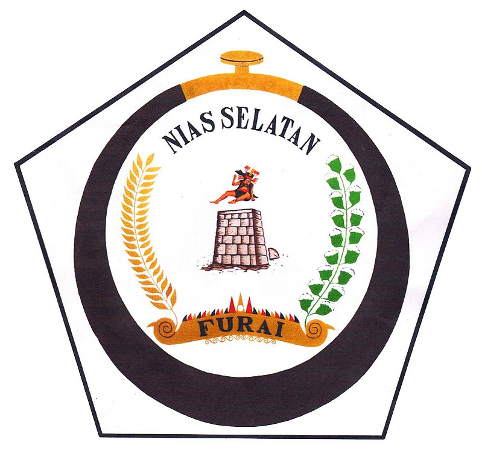
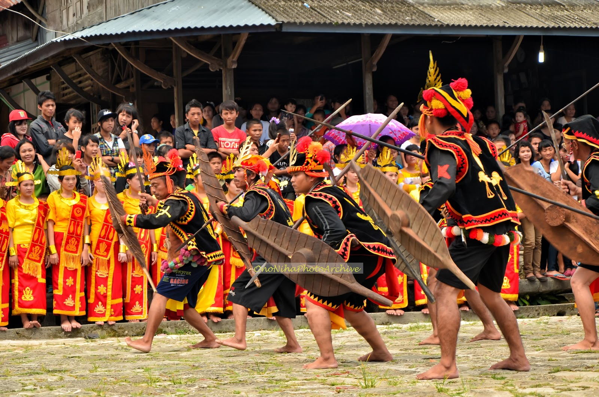
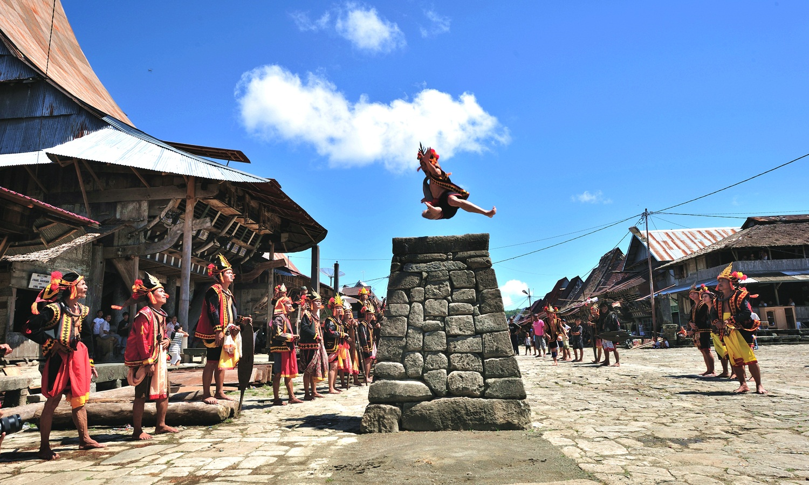
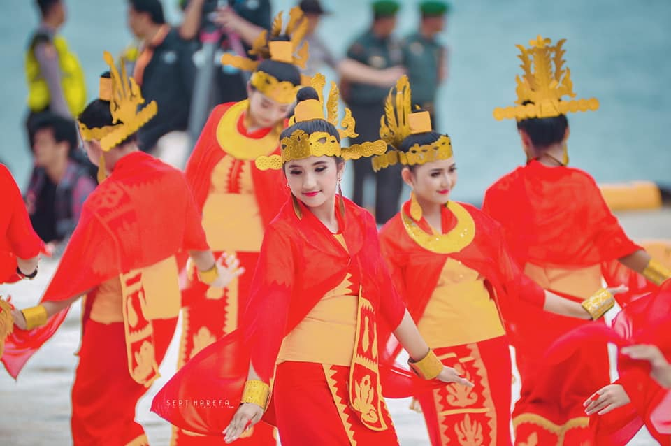
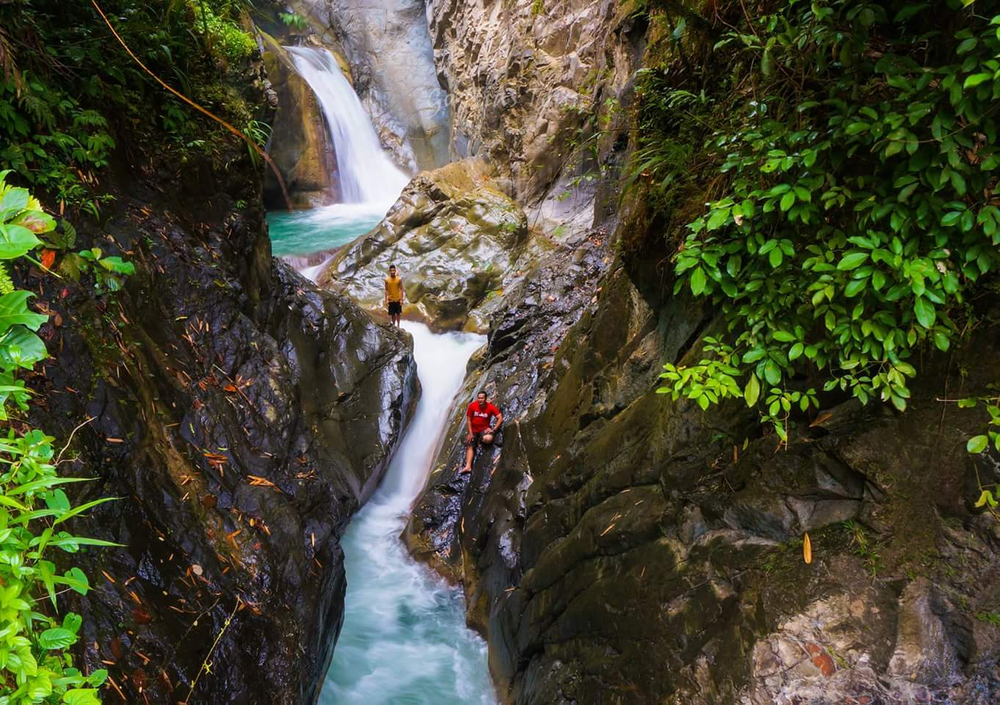
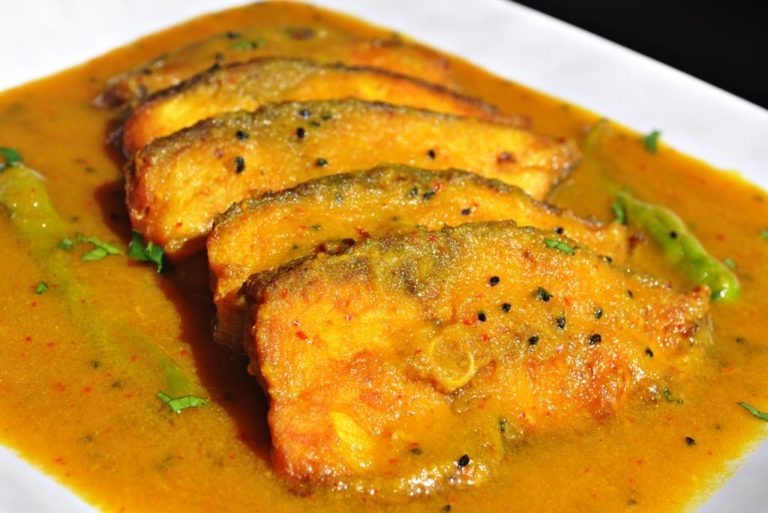
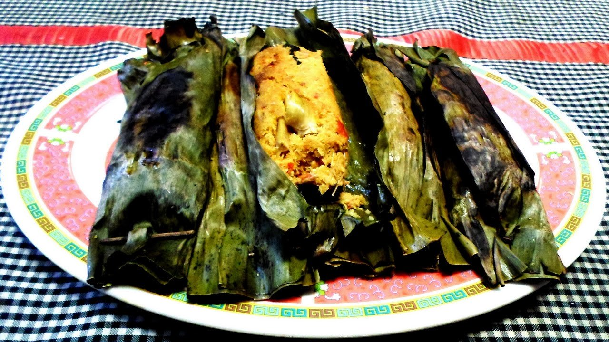
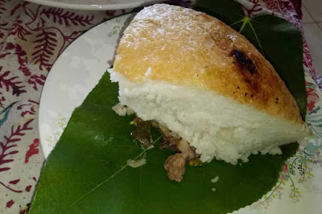

SEJARAH

Nias adalah kelompok etnik yang berasal dari Pulau Nias. Mereka menamakan diri mereka "Ono Niha" (Ono berarti anak/keturunan; Niha = manusia)
dan Pulau Nias sebagai "Tanö Niha" (Tanö berarti tanah). Hukum adat tradisional Nias secara umum disebut fondrakö.
Masyarakat Nias kuno hidup dalam budaya megalitik, dibuktikan oleh peninggalan sejarah berupa ukiran pada batu-batu besar yang masih ditemukan
di wilayah pedalaman pulau ini sampai sekarang.
Nias (bahasa Nias:Tanö Niha) adalah sebutan untuk pulau dan kepulauan yang terletak di sebelah barat Pulau Sumatra, Indonesia,
dan secara administratif berada dalam wilayah Provinsi Sumatra Utara. Pulau ini merupakan pulau terbesar di antara
gugusan pulau di pantai barat Sumatra, dihuni oleh mayoritas suku Nias (Ono Niha). Daerah ini memiliki objek wisata seperti selancar,
rumah tradisional, penyelaman, hombo batu (lompat batu). Pulau dengan luas wilayah 5.625 km² ini berpenduduk hampir 1.000.000 jiwa.
Pulau Nias terbagi atas lima daerah administrasi, satu kota dan empat kabupaten.
Kabupaten Nias Selatan adalah salah satu kabupaten yang berada di provinsi Sumatra Utara yang terletak di pulau Nias.
Berdasarkan data Badan Pusat Statistik Nias Selatan tahun 2021, penduduk kabupaten ini berjumlah 360.531 jiwa (2020),
dengan kepadatan penduduk 145 jiwa/km2. Ibukota Nias Selatan ialah kecamatan Teluk Dalam.
Nias Selatan sebelumnya adalah bagian dari Kabupaten Nias. Status otonom diperoleh pada 25 Februari 2003 dan
diresmikan pada 28 Juli 2003. Kabupaten ini terdiri dari 104 gugusan pulau besar dan kecil. Letak pulau- pulau itu
memanjang sejajar Pulau Sumatra. Panjang pulau-pulau itu lebih kurang 60 kilometer, lebar 40 kilometer.
Dari seluruh gugusan pulau itu, ada empat pulau besar, yakni Pulau Tanah Bala (39,67 km²),
Pulau Tanah Masa (32,16 km²), Pulau Tello (18 km²), dan Pulau Pini (24,36 km²). Tidak seluruh pulau berpenghuni.
Masyarakat Nias Selatan tersebar di 21 pulau dalam delapan kecamatan.
TARIAN
Adapun tarian-tarian yang menjadi Tarian Tradisional di Nias Selatan, yaitu sebagai berikut :
Tari Perang

Tari Baluse atau tari perang adalah salah satu tarian yang berasal dari Nias Selatan, Sumatera Utara.
Tarian ini menggambarkan kegagahan prajurit di medan perang dan perwujudan kebudayaan masyarakat Nias pada zaman dulu.
Tarian ini juga disebut tari Fataele yang juga dibawakan untuk penyambutan tamu atau wisatawan. Tarian ini dibawakan oleh
beberapa pria gambaran prajurit dalam balutan baju perang perpaduan warna merah dan kuning, pedang Tologu, perisai Baluse,
topi perang/mahkota dan tombak (toho) yang panjangnya mencapai 2 meter. Perisai Baluse yang digunakan terbuat dari kayu yang dibentuk
seperti daun pisang dan dipegang dan tangan kiri untuk menangkis serangan lawan. Sedangkan, tombak berada di tangan kanan yang
digunakan untuk melawan serangan musuh. Tarian ini dipimpin oleh seorang komando seperti pemimpin strategi dalam perang.
Lompat Batu

Sejarahnya, lompat batu tersebut merupakan ritual pendewasaan pemuda Suku Nias.
Jika pemuda Nias berhasil melompati batu yang setinggi 2,2 meter itu, mereka dianggap telah menjadi lelaki dewasa dan
dapat bergabung sebagai prajurit untuk berperang dan menikah. Sekarang ini, Hombo Batu itu sudah menjadi
atraksi wisata yang sangat unik di Kepulauan Nias. Lompat batu di Nias itu mencapai setinggi 2,2 meter dan
lebar 90 centimeter serta panjang 60 centimeter.
Mogaele

Ini adalah tarian di mana penari perempuan menawarkan sekapur sirih dari tas khusus kepada tamu penting.
Tarian ini sering dilakukan ketika tamu penting seperti menteri atau pegawai pemerintah mengunjungi Nias khususnya di Nias Selatan.
Tari Mogaele adalah nama tarian tersebut di Nias Selatan.
WISATA
Ada banyak sekali objek wisata yang terdapat di Nias Selatan, berikut adalah beberapa objek wisata
yang terdapat di Nias Selatan.
Sorake

Terkenal dengan Kontes Surfing. Hal ini karena di bulan tersebut sedang tinggi-tingginya ombak. Surfing dihelat baik kelas nasional
dan kelas internasional. Ombaknya yang tinggi tak kalah dengan di Hawai. Semua orang yang suka bermain surfing atau menonton
kontes surfing, wajib nih untuk datang ke Pantai Sorake.
Air Terjun Mondrowe

Panorama indah yang ada di sekitar air terjun ini tidak kalah hebat dengan Air Terjun Humogo. Di sekitar air terjun,
banyak kolam yang bisa digunakann untuk mandi. Aliran air juga cukup lancar meski tidak begitu deras.
Kecuali pada musim hujan biasanya debit air akan meningkat dan air agak terlihat keruh.
Akan lebih baik jika berkunjung ke air terjun ini saat musim kemarau karena air akan nampak lebih bersih dan jernih.
MAKANAN
Selanjutnya yaitu Makanan Khas Nias Selatan. Berikut adalah beberapa makanan khas masyarakat Nias Selatan
Köfö- Köfö

Berupa gulai ikan tapi proses memasaknya berbeda. Köfö- Köfö merupakan kuliner di pulau terpencil di Nias.
Bahannya terbuat dari ikan yang telah dibuang kulitnya dan dimasak dengan santan kelapa setelah digoreng.
Kuliner satu ini biasanya digunakan untuk lauk makan. Sebenarnya tiap masyarakat Nias punya cara masak tersendiri.
Sebelum ikan digoreng ada juga masyarakat Nias yang menumbuk ikan hingga halus dan mencampurnya dengan telur lalu di stream.
Hidangan ini cocok untuk jadi hidangan makan siang karena memiliki cita rasa mirip dengan gulai ikan yang sering jadi hidangan saat makan siang.
Silio Guro (Fale-fale)

Silio Guro adalah kuliner tradisional Nias Selatan yang dibuat dari ikan atau udang segar. Selama mengolah makanan khas ini,
kalian hanya perlu memperhatikan adonan agar udang dan parutan kelapa benar-benar tercanpur sempurna. Jika sudah merata,
ambil daun pisang kemudian masukkan hasil adonan tersebut. Proses terakhir dari masakan tradisional ini
adalah membakarnya ditungku perapian. Makanan ini sering dijadikan menu untuk pendamping nasi.
Fakhe Nifalogu

Fakhe Nifalogu ini adalah masakan tradisional dari Nias Selatan yang luar biasa unik. Fakhe nifalogu ditanak dalam
periuk tanh liat. Setelah dimasak matang diatas api, nasi langsung ditaruh di atas daun pisang kepok dengan posisi terbalik.
Fakhe nifalogu menjadi satu simbol juka disuatu kampung sedang berlangsung pesta yang disertai dengan upacara adat suku Nias.
Itu semua adalah cerita dari Nias Selatan, yang memiliki keunikan tersendiri dan tersembunyi. Masih ragu untuk
berkunjung ke Nias Selatan? AYOOOO tunggu apa lagi kawan!! :).
My Profile
| Nama Lengkap |
: |
Everild vemin Aprilya Halawa |
|
| Tempat, Tanggal Lahir |
: |
Hiliana'a, 27 april 2001 |
| Agama |
: |
Katolik |
| Jenis Kelamin |
: |
Perempuan |
| Status |
: |
Pelajar |
| Alamat |
: |
Jalan Saonigeho Km2,TelukDalam, Nias Selatan, Sumatera Utara |
| Email |
: |
everildh@gmail.com |